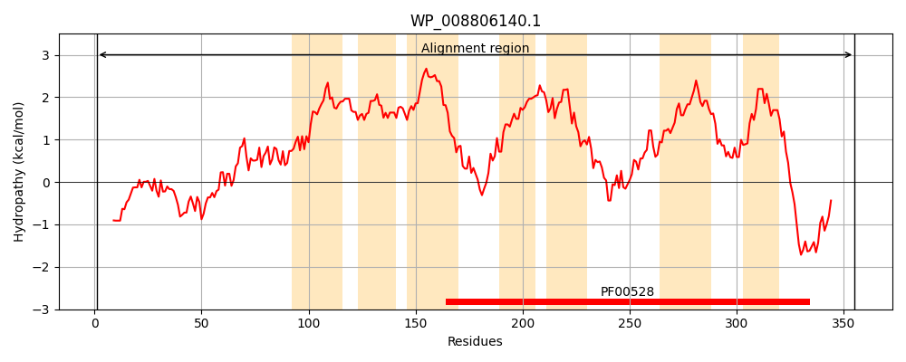
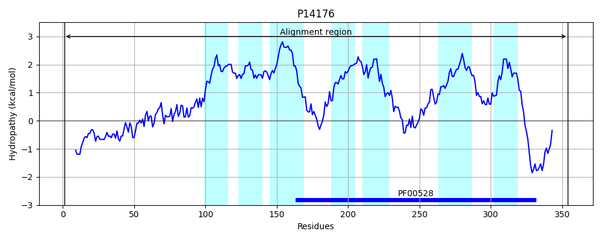
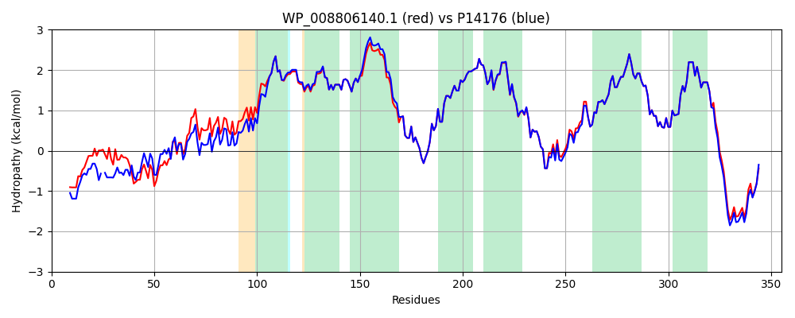

Hit Accession: P14176
Hit TCID: 3.A.1.12.1
Hit Description: gnl|BL_ORD_ID|9120 gnl|TC-DB|P14176|3.A.1.12.1 Glycine betaine/L-proline transport system permease protein proW - Escherichia coli.
Mach Len: 355
e:0.000000
Query TMS Count : 7
Hit TMS Count: 7
TMS-Overlap Score: 6.850000
Predicted Substrates:CHEBI:16244;4-(trimethylammonio)butanoate, CHEBI:3665;choline, CHEBI:3424;carnitinium, CHEBI:28825;beta-alanine betaine, CHEBI:3073;glycine betaine, CHEBI:26271;proline
BLAST Alignment:
Score: 1639 , Bit scores: 635 bits, E-value: 0.0e+00, Alignment length: 355, Percentage identity: 90
Query: 1 MADQTNPWDSAPATDSAAQAADAWGGASTAAPANGGGADWLHSAPAPQPESFNIMDPFHKTLIPLDSWVTHAIDWIVLHFRPLFQGIRVPIDYILSAFQQLLLGMPAPVAIIVFALIAWQISSLGMGVATLVSLIAIGAIGAWSQAMVTLALVLTALLFCMVIGLPLGIWLARSPRAAKIIRPLLDAMQTTPAFVYLVPIVMLFGIGNVPGVVVTIIFALPPIVRLTILGINQVPADLIEASRSFGASPRQLLFKVQLPLAMPTIMAGVNQTLMLALSMVVIASMIAVGGLGQMVLRGIGRLDMGLATVGGVGIVILAIILDRLTQAVGRDARSRGNRRWYTTGPLGLITRPFCR 355
MADQ NPWD+ PA DSAAQ+ADAWG T AP +GGGADWL S PAP E FNI+DPFHKTLIPLDSWVT IDW+V HFRP+FQG+RVP+DYIL+ FQQLLLGMPAPVAIIVFALIAWQIS +GMGVATLVSLIAIGAIGAWSQAMVTLALVLTALLFC+VIGLPLGIWLARSPRAAKIIRPLLDAMQTTPAFVYLVPIVMLFGIGNVPGVVVTIIFALPPI+RLTILGINQVPADLIEASRSFGASPRQ+LFKVQLPLAMPTIMAGVNQTLMLALSMVVIASMIAVGGLGQMVLRGIGRLDMGLATVGGVGIVILAIILDRLTQAVGRD+RSRGNRRWYTTGP+GL+TRPF +
Sbjct: 1 MADQNNPWDTTPAADSAAQSADAWG-TPTTAPTDGGGADWLTSTPAPNVEHFNILDPFHKTLIPLDSWVTEGIDWVVTHFRPVFQGVRVPVDYILNGFQQLLLGMPAPVAIIVFALIAWQISGVGMGVATLVSLIAIGAIGAWSQAMVTLALVLTALLFCIVIGLPLGIWLARSPRAAKIIRPLLDAMQTTPAFVYLVPIVMLFGIGNVPGVVVTIIFALPPIIRLTILGINQVPADLIEASRSFGASPRQMLFKVQLPLAMPTIMAGVNQTLMLALSMVVIASMIAVGGLGQMVLRGIGRLDMGLATVGGVGIVILAIILDRLTQAVGRDSRSRGNRRWYTTGPVGLLTRPFIK 354 | Protein Hydropathy Plots: |
|---|
|  |  |
Pairwise Alignment-Hydropathy Plot:
|
|---|
|  |